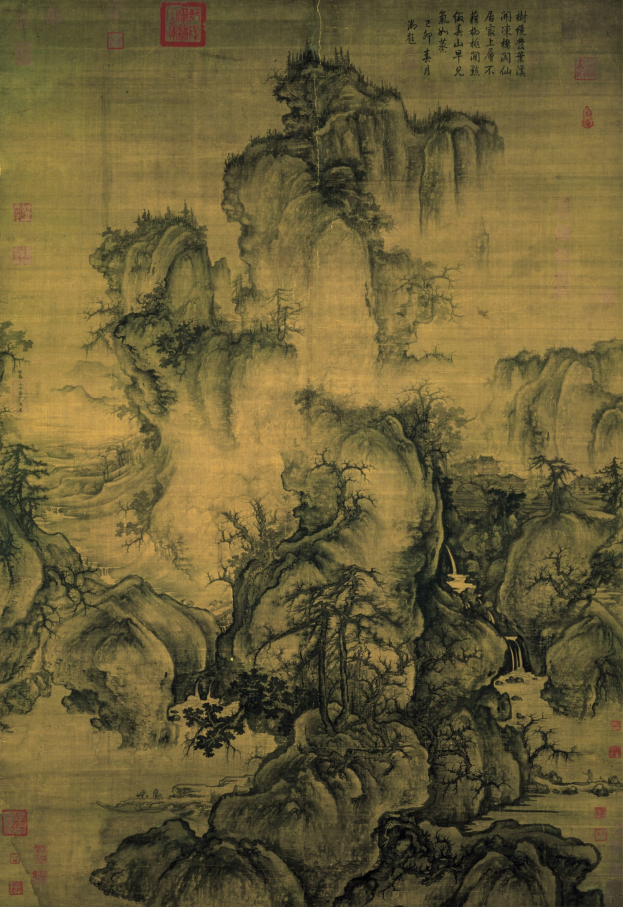
空에서 理로 — 경전주소에서 성리학까지
文藝復興, 송나라에서 다시 피어나다
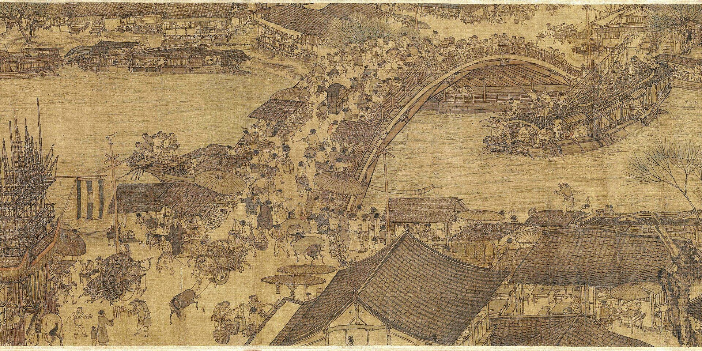
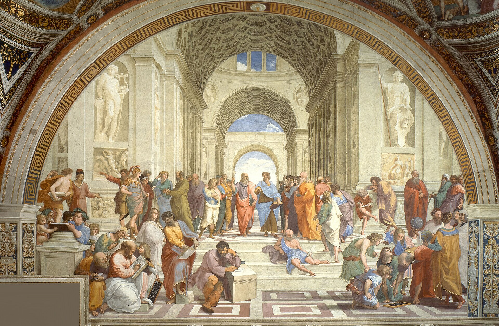
통로 가운데 방(집) 아래에 아래로 향한 발
→ 나갔던 발이 집으로 되돌아오다
네 손이 함께
들것(쟁반)을
들어 올리는 모습
→ 일으키다 · 일어나다
송(宋)나라 960–1279
무엇이 쓰러졌다가 다시 일어났을까?
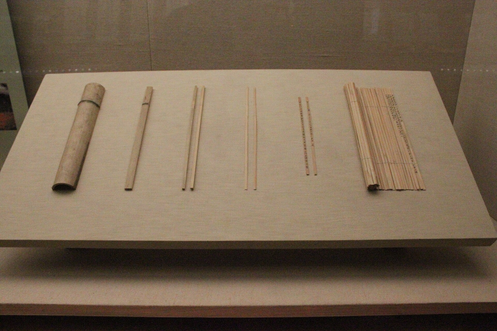
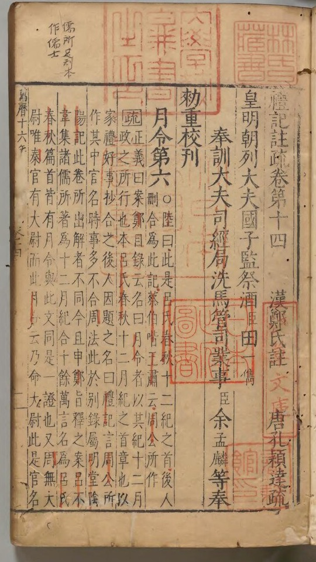
《예기주소》 14권 첫 쪽 — 명나라 판본
(일본 국립공문서관)
성인의 글 — 큰 글씨 본문
날실처럼 변하지 않는 가르침
현인이 經을 풀어 전한 해설
傳 전할 전 — 예: 《춘추》의 《좌전》
한나라 정현(鄭玄)이 단 풀이
注 부을 주 — 글에 풀이를 부어 넣다
당나라 공영달(孔穎達)이 注를 다시 푼 풀이
疏 트일 소 — 막힌 뜻을 다시 트다
“애쓰기는 어린이 공부의 두 배인데 쓸모가 없다” — 주희, 《대학장구》 서문
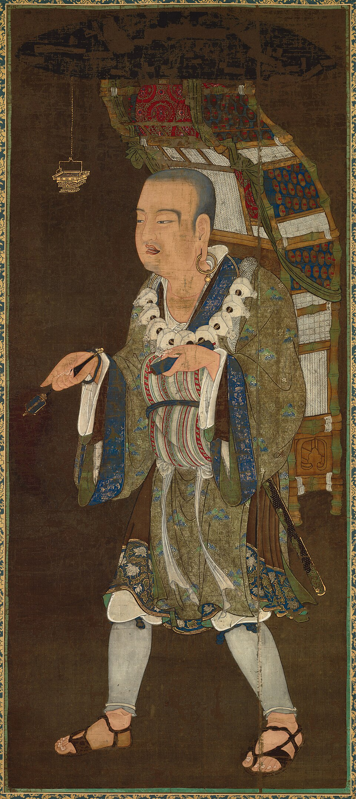
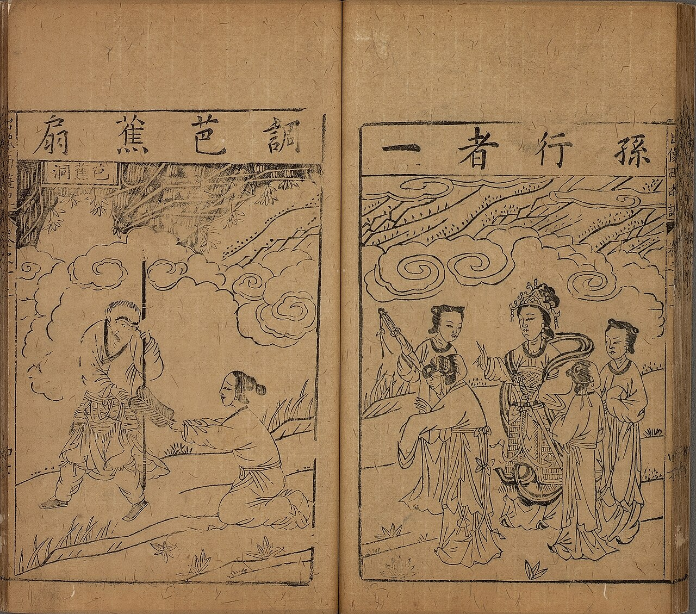
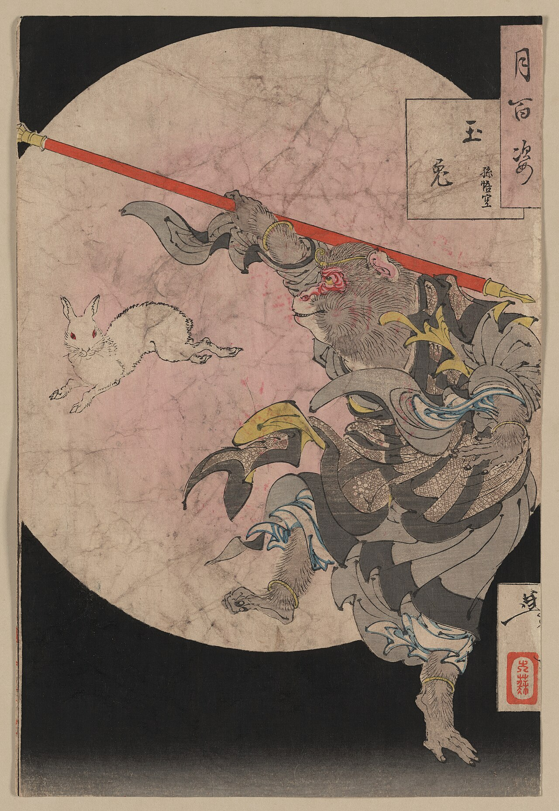
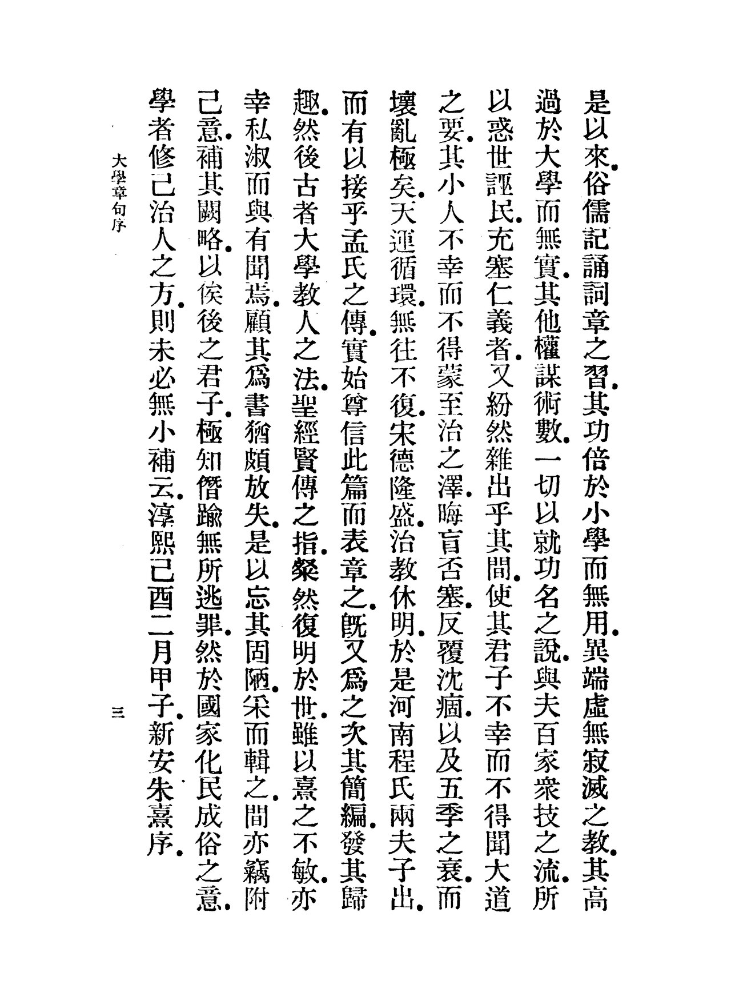
속된 유학자들의 외우고 글 짓는 공부는 — 애쓰기는 소학의 두 배인데 쓸모가 없고
이단의 허무 · 적멸의 가르침은 — 높기는 대학보다 높은데 알맹이가 없다
도교 — 텅 비어 없음
억지로 하지 않는 자연
불교 — 고요히 꺼진 열반
점멸(點滅)의 그 滅!
※ 국경은 대략적으로 그린 약도
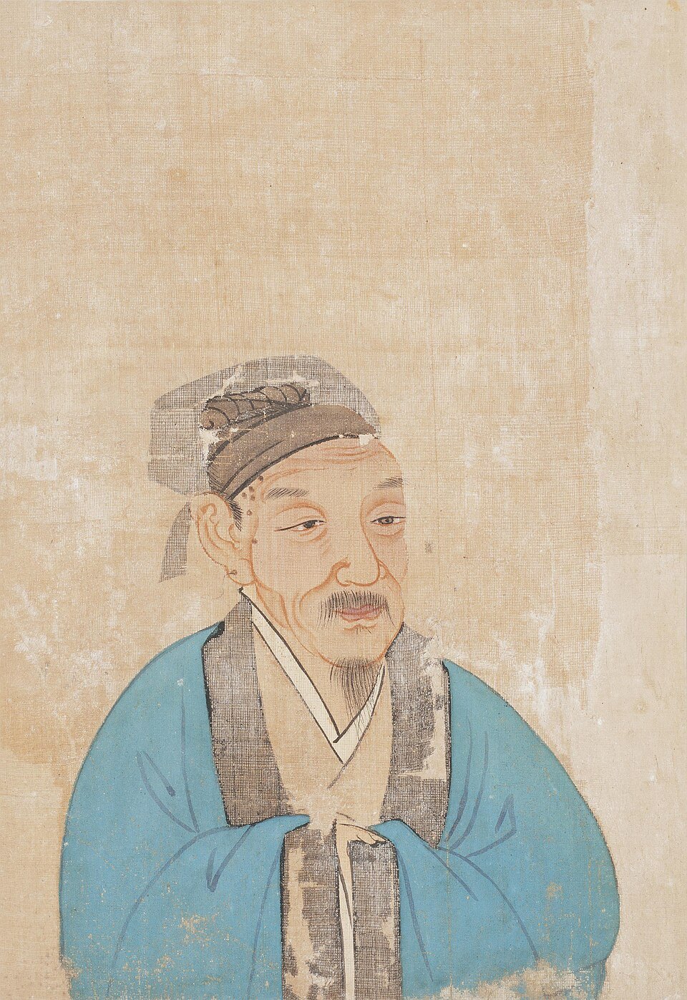
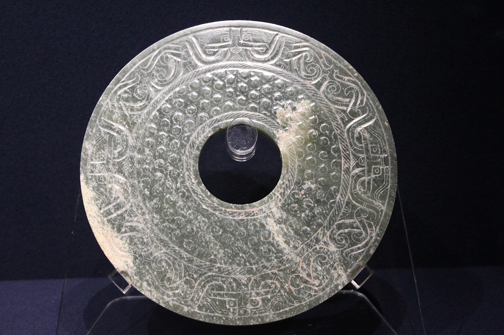
“왕이 옥장이에게 그 원석을 다듬게(理) 하니 보물이 나왔다” — 《한비자》 화씨벽 이야기
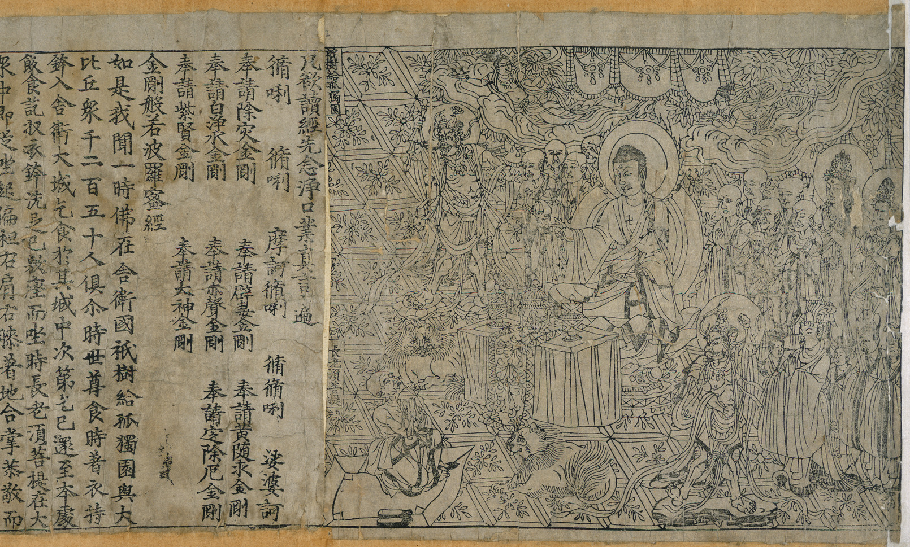
영원히 변하지 않는 ‘나’는 없다
내 본성(性)이 곧 우주의 이치(理)다
《대학》 — 닦은 나에서 세상으로
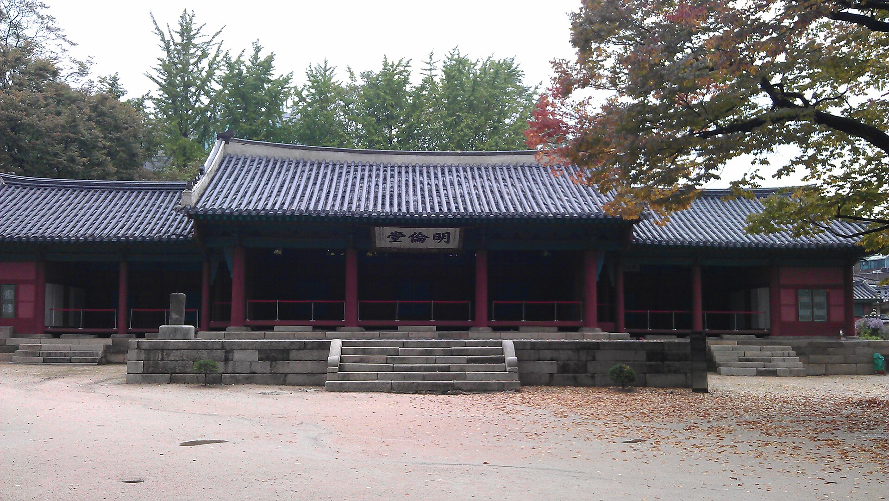
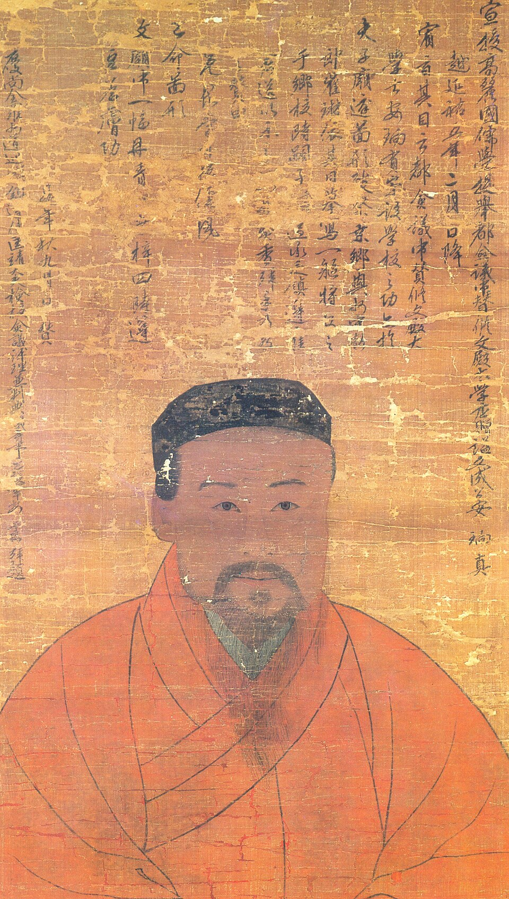
오늘의 질문 ④ — 둘 다 성리학자!